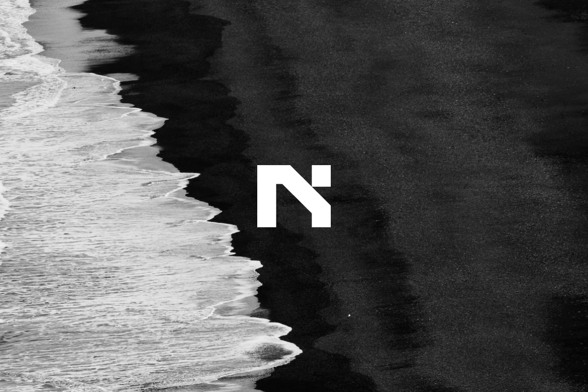
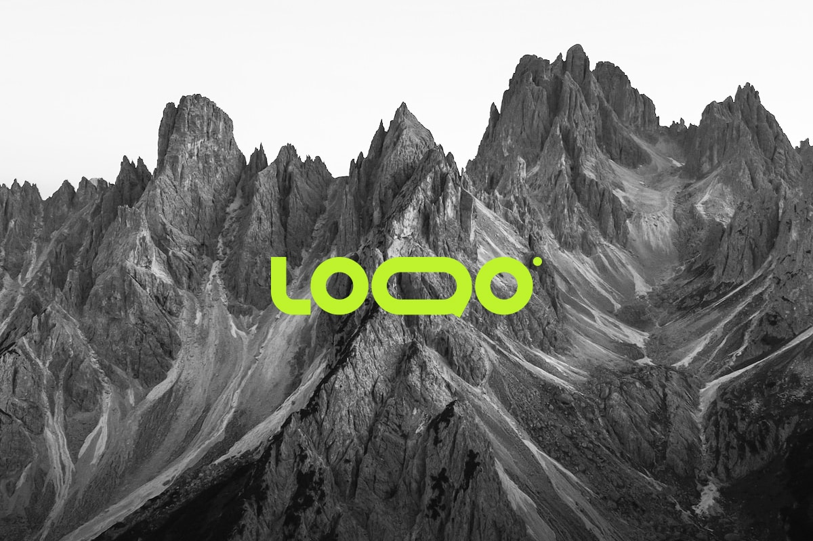
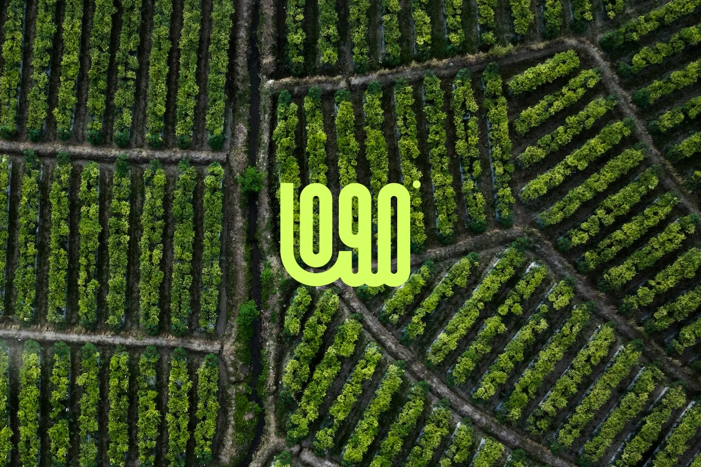

↗Independent design practiceStrategy / Identity / Digital
Independent ideas.Distinct identities.
↓
Ideas into form.
We shape thoughtful identities and digital experiences.
For ideas with somewhere to go.
Ideas into form.
Selected work
Three concept studies / 01—03


The practice
Small details. A wider view.01 / How we thinkGood design begins
Good design begins
with a better question.
What needs to be said? Who needs to hear it? And what would make it feel unmistakably yours? We start there, then bring strategy, identity and digital design together around one clear idea.
Tell us what you’re thinking ↗02 / What we do
01Find the direction
Positioning, naming and creative strategy. A clear foundation for the decisions that follow.
02Shape the identity
Visual identities, art direction and design systems. A coherent language with enough room to grow.
03Build the experience
Websites, product direction and digital experiences. Thoughtful design that makes the next step feel natural.